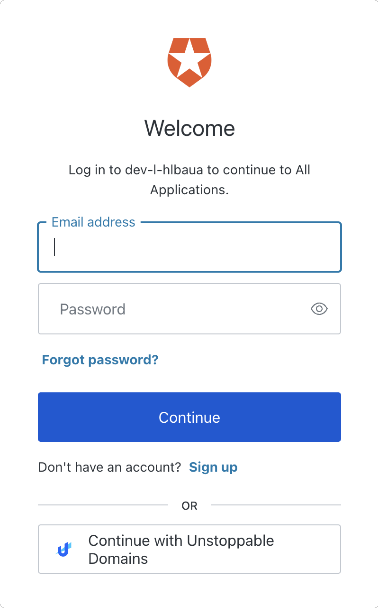

Unstoppable Login: Auth0
The Unstoppable Domains social connection for Auth0 abstracts blockchain implementation details behind the OAuth2 standard. While many developers are new to blockchain, most will be familiar with OAuth2. This familiar approach enables your application to request OAuth2 scopes and receive claims to access Web3 user metadata, communication handles and blockchain specific details. Since the social connection is natively integrated into the Auth0 ecosystem, developers can tap into a rich client library to further simplify user management.

This integration guide will show you how to configure the Unstoppable Domains social connection for Auth0 to support web3 login without writing any blockchain-specific code.
Step 1: Create an Auth0 Account
Before using the Unstoppable Domains social connection, you’ll need an Auth0 account. After creating an account, you will have an automatically generated tenant and a Default App. See the Auth0 documentation on Creating Tenants and Creating Applications for more information on creating your own.
Step 2: Configure your Login Client
In addition to the basic configuraton outlined in Login Client Configuration, some configuration specific to Auth0 is required.
- Set your Redirect URI to
https://{{ TENANT_ID}} .{{ REGION }}.auth0.com/login/callback. You can copy the origin from the Domain field of your Auth0 application Settings. - Set the Token Endpoint Authentication Method in the Advanced configuration page to Client Secret Post.
- Click Confirm Changes.
client_secret from the client metadata on the Login page of your client configuration. You won't be able to view it again without clicking Rotate Secret to generate a new one.
Step 3: Add the UD Social Connection
Next you will need to add and configure the social connection. This will require the client_id and client_secret from your login client metadata.
- Find the Unstoppable Domains social connection in the Auth0 Marketplace
- Click Add Integration
- Read the necessary access requirements and click Continue.
- Configure the integration using the
client_idandclient_secretfrom your login client metadata. - Select the Permissions needed for your app
- Turn on or off syncing user profile attributes at each login
- Click Create
- Select the Applications tab and choose the apps that should use the Unstoppable Domains social connection
User profile (required) and User profile (optional)), will result in an error. See Optional Scopes for more information.
Step 4: Add Custom Claims (Optional)
Some of the Web3 claims offered by Unstoppable Domains are outside the standard OAuth2 specification. For example, the wallet_address claim may be useful to your app but is not included in the default profile. To learn more about the available scopes for Login with Unstoppable Domains, see Scopes for Login.
Adding a custom claim requires a few one-time steps in your Auth0 tenant. The process is summarized below, including some example code for creating the custom claim in your Auth0 tenant.
- In your Auth0 tenant click Actions in the navigation menu
- Click the Flows menu item
- Click Login to define a new login flow
- Click the “+” icon to the right of Add Action
- Use the code editor to copy/paste the example code.
/* Handler that will be called during the execution of a PostLogin flow.
*
* @param {Event} event - Details about the user and the context in which they are logging in.
* @param {PostLoginAPI} api - Interface whose methods can be used to change the behavior of the login.
*/
exports.onExecutePostLogin = async (event, api) => {
const { strategy, name: connection } = event.connection;
const { configuration, secrets } = event;
if (strategy !== "oauth2" || connection !== "unstoppable-domains") {
//This action only works for the unstoppable domains connection
return;
}
const claim = "https://unstoppabledomains.com/wallet_address";
const value = event.user.app_metadata.wallet_address;
api.idToken.setCustomClaim(claim, value);
api.accessToken.setCustomClaim(claim, value);
};walletaddress claim
- Click Add to Flow in the deployment confirmation popup
- Drag and drop your new custom action into the login flow diagram
See the Auth0's example for how to add custom claims to a token for detailed information about the process.
Step 5: Login With Unstoppable
In the left navigation menu, you can expand the Authentication section, select Authentication Profile, and click Try to preview your new Auth0 login flow with Unstoppable Domains.
Once your app is using the Unstoppable Domains social connection, Auth0 will be able to return user metadata to your app.As an example, consider the following user created by Auth0 using the Unstoppable Domains social connection:
{
"app_metadata": {
"wallet_address": "0xcAa2904218F62455EE24b5D56E43eAbE0a832672",
"chain_id": 1
},
"created_at": "2022-08-25T20:33:06.469Z",
"email": "mydomain.x@ud.me",
"email_verified": true,
"identities": [
{
"provider": "oauth2",
"user_id": "unstoppable-domains|mydomain.x",
"connection": "unstoppable-domains",
"isSocial": true
}
],
"name": "John Doe",
"nickname": "mydomain.x",
"picture": "https://storage.googleapis.com/unstoppable-client-assets/images/user/5919054/3cd1b52b-686d-416d-9444-374581d38184.jpeg",
"updated_at": "2022-09-13T12:55:30.500Z",
"user_id": "oauth2|unstoppable-domains|mydomain.x",
"user_metadata": {
"social": {
"twitter": "@handle"
},
"location": "Somewhere, World",
"profileURL": "https://ud.me/mydomain.x"
},
"last_ip": "71.69.169.160",
"last_login": "2022-09-13T12:55:30.500Z",
"logins_count": 12,
"blocked_for": [],
"guardian_authenticators": []
}